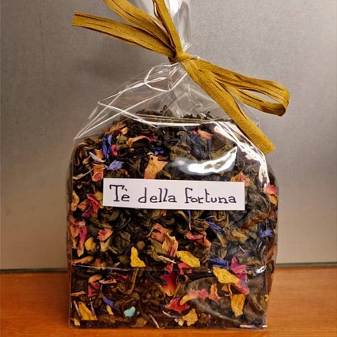
Descrizione:
"Té della fortuna" una miscela magica che ci dà un po' di speranza
di un nuovo inizio
Ingredienti: té verde, té nero, stelline di zucchero, petali di rosa,
fiori di osmanto, petali di girasole, petali di
fiordaliso,aromi.
Prezzo: € 3,90
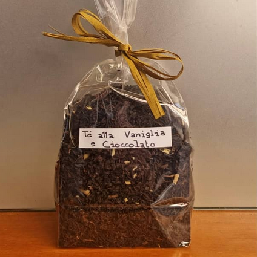
Descrizione:
"Té alla Vaniglia e Cioccolato"
Il principio attivo della vaniglia, la vanillina, può misurare i livelli di colesterolo nel
corpo..
Ingredienti: té ciocciolato bianco 5,7% (zucchero, latte intero in polvere, burro di cacao,
lecitina di soia, aroma di vaniglia)
vaniglia bacche 0,5%, aromi.
Prezzo: €4,20
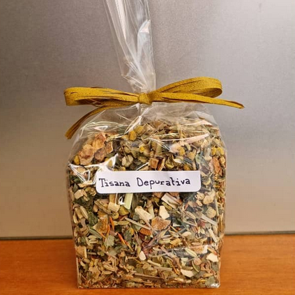
Descrizione:
Perché non iniziare con una BUONISSIMA "TISANA DEPURATIVA" ?
Ingredienti: Finocchio semi, mela, scorza d'arancia, mate, camomilla, tiglio, liquirizia radice,
cumino semi, melissa, cardamo fiori,
menta piperita, lemongrass.
Prezzo: € 3,70
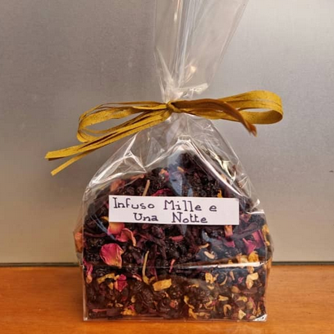
Descrizione:
"Mille e Una Notte" é un infuso depurativo e antinfiammatorio grazie al sambuco
Ingredienti: Uvetta di corinto, ibisco, ribes nero, sambuco, rosa petali, heliantus, aromi, fiori
di gelsomino.
.
Prezzo: € 3,70
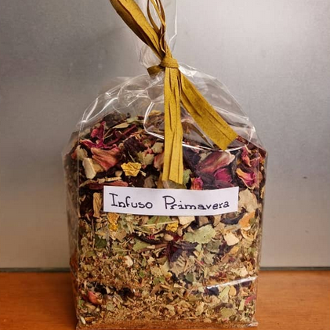
Descrizione:
"Infuso Primavera" Essendoci dentro Ibisco dà un effetto antisettico,
buono per le infezioni come la cistite, riducono la pressione sanguigna e proteggono i vasi
sanguigni.
Ingredienti: Ibisco, tiglio, scorza d'arancia, mela pezzi, fragola foglie, rosa petali, fiori di
girasole, aromi.
Prezzo: € 3,40
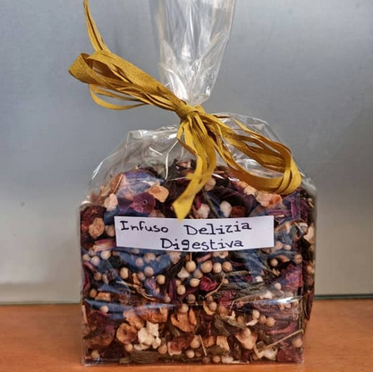
Descrizione:
"Delizia Digestiva"
Gli infusi di frutta sono Ideali per qualsiasi momento della giornata: caldi o freddi, freschi e
speziati.
Ingredienti: mela in pezzi, uva sultanina (uvetta, olio di semi di cotone), rosa canina, ibisco,
coriandolo semi, té verde, aromi.
Prezzo: € 3,90
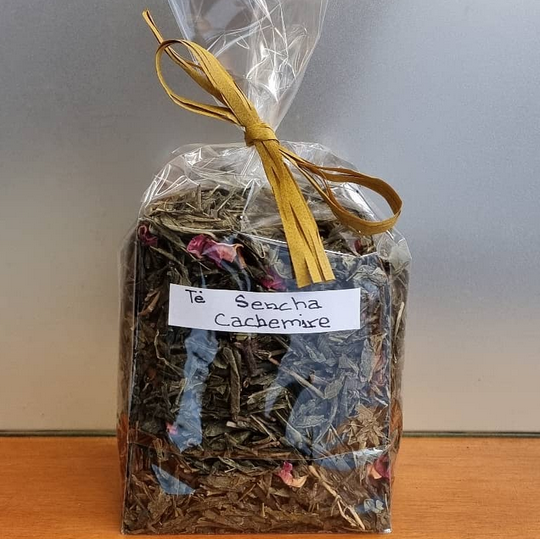
Descrizione:
Té Sencha Cachemire" é un té verde dove i toni pungenti del cardamomo e dei chiodi di garofano si
uniscono a quelli più
dolci della cannella, con un tocco finale floreale dato dai petali di rosa.
Ingredienti: té verde,cardamomo, rosa petali, garofano chiodi, cannella, aromi.
Prezzo: € 3,90
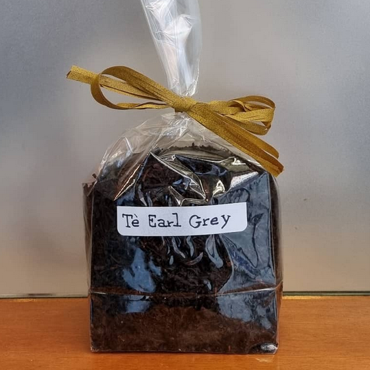
Descrizione:
"Earl grey" aromatizzato al bergamotto, grazie al suo principale ingrediente "Té nero" aiuta la
prevenzione delle
malattie cardiache , al ritardo dell'invecchiamento della pelle. Non solo, alcuni studi hanno anche
evidenziato che il
tė nero aiuta a dimagrire.
Ingredienti: té nero, aromi.
Prezzo: € 3,80
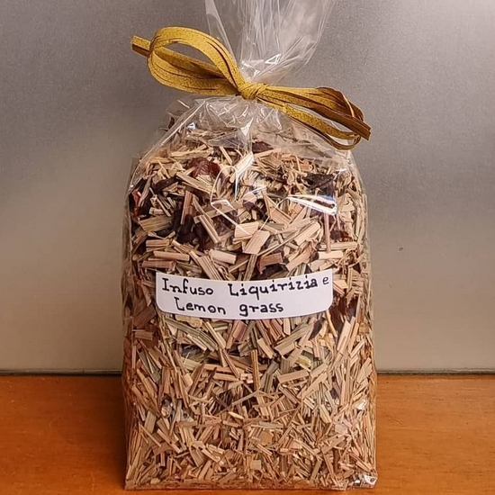
Descrizione:
"Liquirizia e Lemongrass" il Lemongrass
ha proprietà antibatterica, antiossidante, idratante e la radice di liquirizia ha capacità di
agire su naso e gola, funzionalità del sistema digerente.
Ingredienti: Lemongrass 55.4%, rosa canina, Ibiscus, liquirizia radice 13.9%, calendula fiori,
aromi.
Prezzo: € 3,70
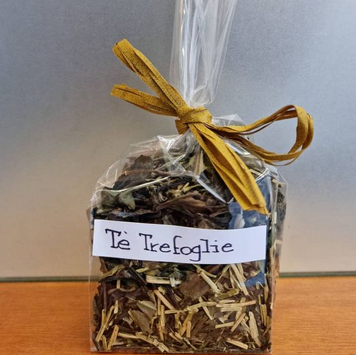
Descrizione:
"Té Trefoglie" novità delle 3 categorie di té , una miscela di sapore e benessere con té verde, nero e
bianco.
Ingredienti: teneri germogli e aghi argentei del Té Bianco cinese, foglie verdi e steli di
Kukicha giapponese, té nero di Ceylon
dalle foglie arricciate.
Prezzo: € 3,90
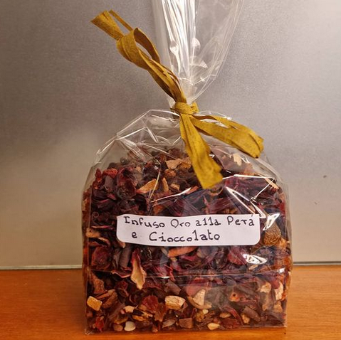
Descrizione:
Infuso "Oro alla Pera e Cioccolato" é ottima dopo i pasti.
Ingredienti: Rosà canina, Karkadé , pera disidratata 26,1%, scaglie di cioccolato 18,7% (zucchero,
burro di cacao, pasta di cacao,
lecitina di soia, aroma di vaniglia, latte in polvere) scorza d'arancia, aromi.e.
Prezzo: € 4,60
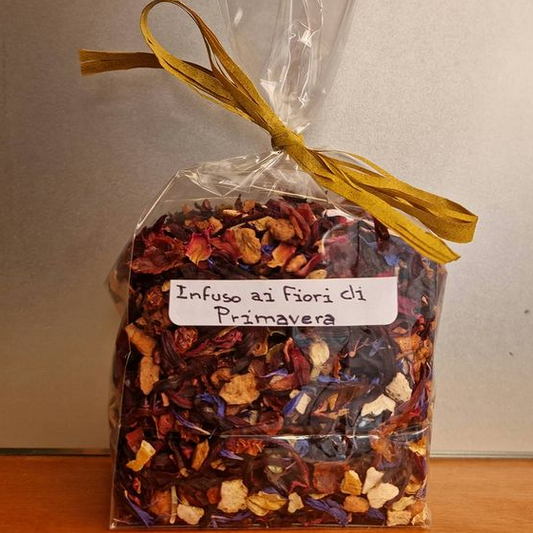
Descrizione:
Infuso "Fiori di primavera"
Uso consigliato: puro caldo, ottimo con miele.
Ingredienti: Ibisco, rosa canina, scorza d'arancia, mela pezzi, aromi, rosa petali 1,1%,
fiordaliso fiori 1,1%, gelsomino fiori 1,1%.
Prezzo: € 3,70
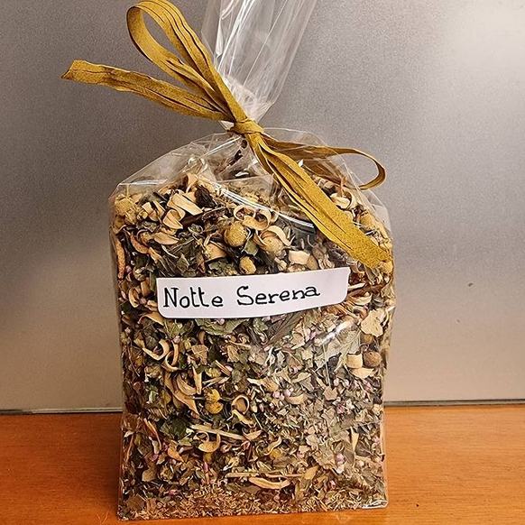
Descrizione:
"Notte serena"
Con i suoi ingredienti ti garantisce una notte di tranquillità e sonno.
Ingredienti: camomilla, arancio fiori, fragola foglie, melissa, erica fiori, menta piperita,
aromi.
Prezzo: € 3,50
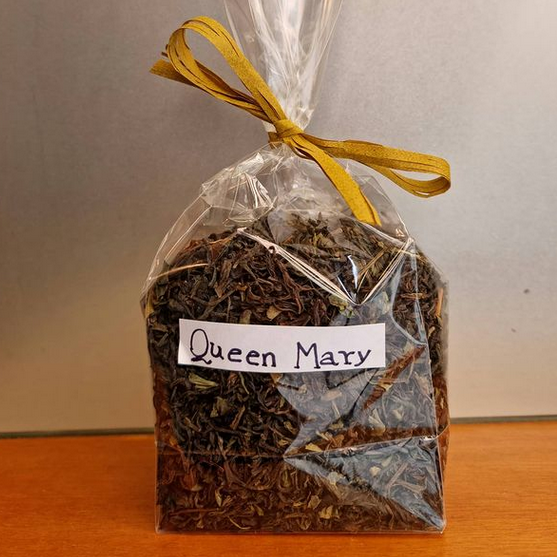
Descrizione:
"Queen Mary" é un té perfetto per la colazione. Buon sapore temperato con carattere floreale e note
maltate. Un
preferito tradizionale.
Ingredienti: té nero.
Prezzo: € 3,80
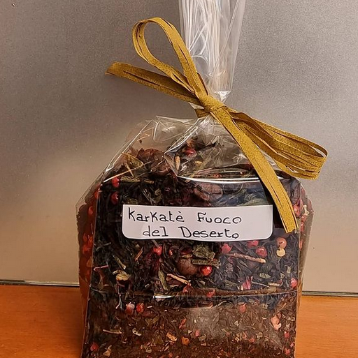
Descrizione:
"Karkaté Fuoco del Deserto" servibile sia caldo sia freddo.
é una miscela che racchiude tutte le qualità del Té e dell'infuso.
Ingredienti: Té (50%), Karkadé (10%), grani di caffé , pepe rosa, peperoncino, aromi.
Prezzo: € 4,20